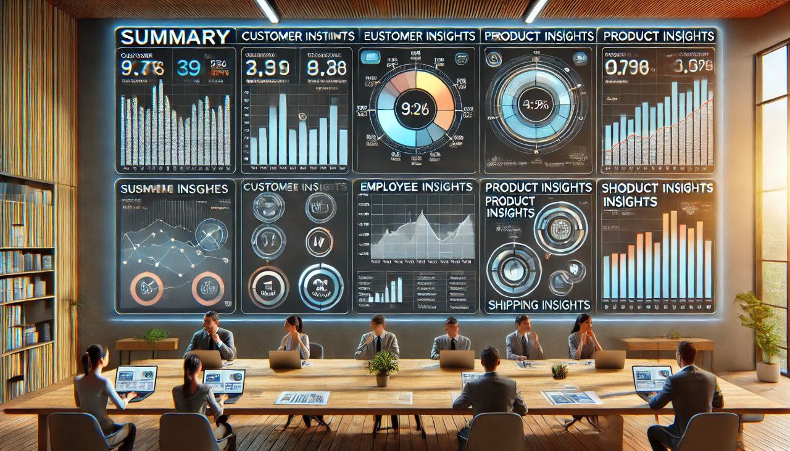
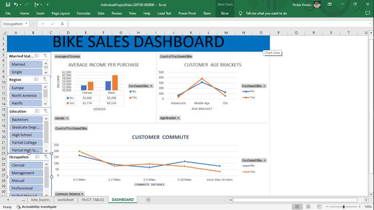

This is an end-to-end project where I conducted a comprehensive analysis of customers,employees and products performances, focusing on key metrics such as count of workers, top products,top customers and so on,and their overall impact of operations on the organization.This is a combination of three skill and tools to derive this visualization and insights..
.

This project analyzes climate data using Power BI. The dataset includes temperature, precipitation, humidity, wind speed, and other weather-related parameters recorded over time. The goal is to create insightful visualizations to identify trends and patterns in the climate data...

This Power BI dashboard provides an interactive visualization of the Tuberculosis (TB) burden across different countries and regions over multiple years. The dataset includes key metrics such as TB prevalence, incidence, mortality, and case detection rates, helping users analyze global trends and regional disparities..

The Movie Dataset Visualization is an interactive Power BI project designed to analyze and present insights from a comprehensive movie dataset. This project helps users explore trends in revenue, popularity, and audience engagement using dynamic visualizations.
This project features an Excel Dashboard with Pivot Tables designed to analyze key hospital data. The report provides insights into patient distribution, wait times, and service trends, allowing for better decision-making in healthcare management.

The Biker Sales Report Dashboard is an Excel-based analytical tool designed to visualize and summarize biker sales data using Pivot Tables. It provides key insights into sales performance, customer trends, and product popularity, making it easier to make data-driven business decisions.. .

This project involves analyzing three key datasets on health department for 2022—Diagnosis Codes, External Cause Codes, and Procedure Codes—using Power BI. The goal is to derive meaningful insights through interactive visualizations and summary statistics.